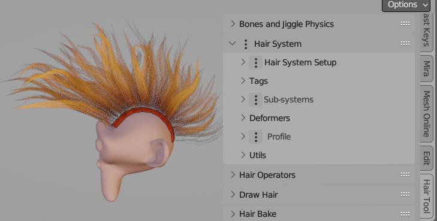
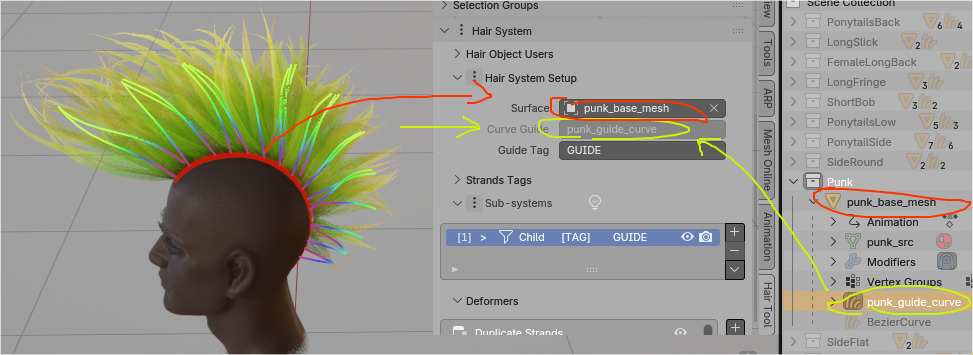
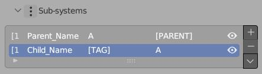
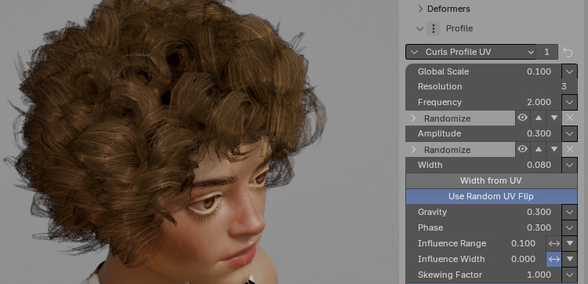

Overview¶
In this section I will only focus on the general Overview of how the Hair Tool works.
 All the Hair Tool features are located in Right Sidebar → Hair Tool Tab
Since release of ver 3.0, Hair Tool is using 'Hair System' - geometry nodes based stack of modifiers to procedurally generate and modify hair strands. It consists of:
- A setup section to assign a guide curve and source mesh
- Hair sub-systems with generators and Deformers to create and modify strands
- A hair profile to add geometry, UVs, and materials to strands
Key features of the Hair System include hair deformers like noise, clumping, braids, curls, etc. It also covers selection tools, input masks, and operators for simplifying strands, transferring the system between objects, and more.
 Hair System can be assigned to any mesh (usually scalp) or 'new' curve object
Hair System can be assigned to any mesh (usually scalp) or 'new' curve object
Only: Shell Hair and Short Hair are not using Hair System workflow
Hair System components are used almost everywhere in Hair Tool, so it is important to understand how it works.
Setup Section¶
In this panel displays:
- guide curve (greyed out if Hair System is attached to Guide Curve)
- source mesh - from where strands are spawned from - usually scalp (greyed out if Hair System is attached to Source Mesh)

In Image above Hair System is attached to guide curve Suzanne_curve_hair (yellow), and strands are spawned from Source Surface: Suzanne_Scalp mesh
Thanks to Setup modifier you can transfer hair system from one object to another (e.g. from guide curve to mesh object) - this is done by using Transfer Hair System button.
When your add Hair System to object, the Setup section will be automatically filled with correct data.
Note: Setup modifier is optional - for example it is not used when drawing hair curves with Hair Drawing tool.
Hair Sub-Systems¶
Sub-Systems are responsible for hair curves generation and modification by Deformers. To add Hair Sub-System click [+] icon in Sub-System tab
 Sub-System: Users Count | Name | Tag | Parent Tag | Visibility
 On image above we have Two Hair Sub-Systems named:
On image above we have Two Hair Sub-Systems named: Parent, Child. You can see Child system is made from: Strand Generator, Noise, Clump, etc. deformers. Whole system is guided by: HairCurve guide - second input at very top
Currently, there are three types of sub-systems:
- Strands Generator - it will generate strands from mesh (usually scalp) - mesh is required and has to be assigned in Setup Section (usually done automatically, by Hair Tool)
- Strands Filter - it is not generating strands, but it can affect strands generated by other sub-systems placed above in stack (you can affect only selected strand by using 'Tag' field)
- Strands From Grid Surface - it will generate strands from guide grid surface - grid has to have one border loop marked as 'sharp' (Ctrl+E -> Mark Sharp) - this will tell addon where the hair roots should be placed
First Deformer cannot be removed - and its type is set based in Hair System type you added
List of available deformers can be found here.
Note: Similarly to Setup modifier, Hair Sub-Systems are optional - for example it is not used when drawing hair curves with Hair Drawing tool. But you can add them at any time to any curve by clicking [+] icon in Sub-System tab.
Hair Profile¶
Hair Profile is last modifier in Hair System stack. It is place where, not only hair profile is attached to curves, but UVs and Material is assigned too
Hair Tool will automatically add default UVs and Hair Material to hair system.

Note: Do not assign Material to hair object in Materials Tab - this won't work. Use Hair Profile panel instead.
 Hair Profile Panel with Flat Profile preset
To add or edit curve profile, use Ctrl+Shift+H pie menu -> click 'Add (Update) Profile'.